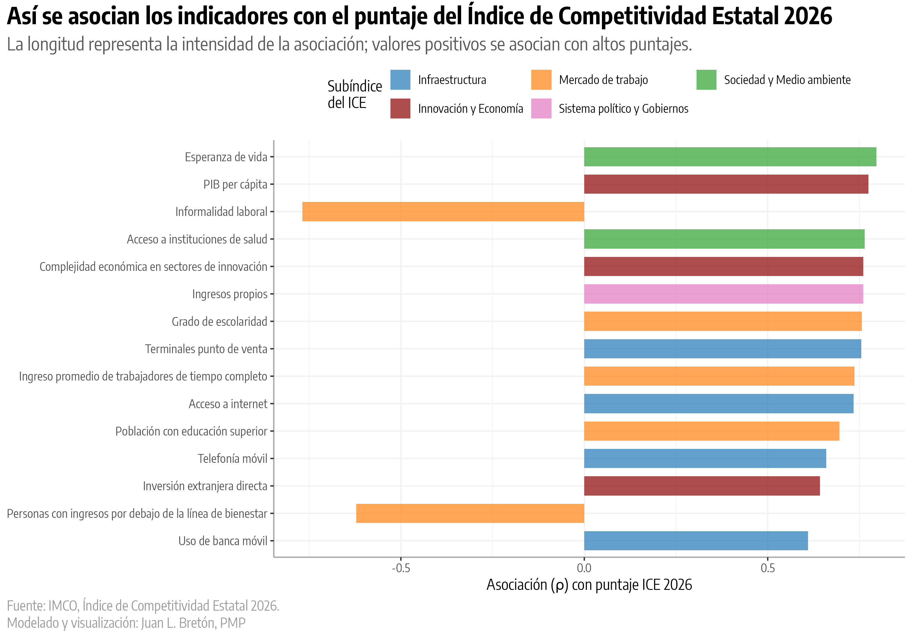
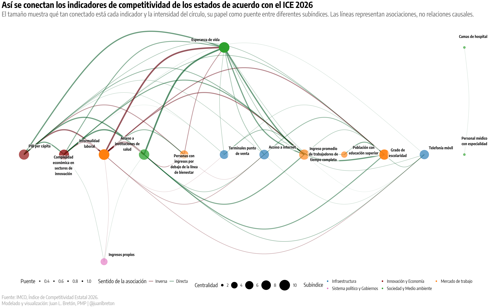
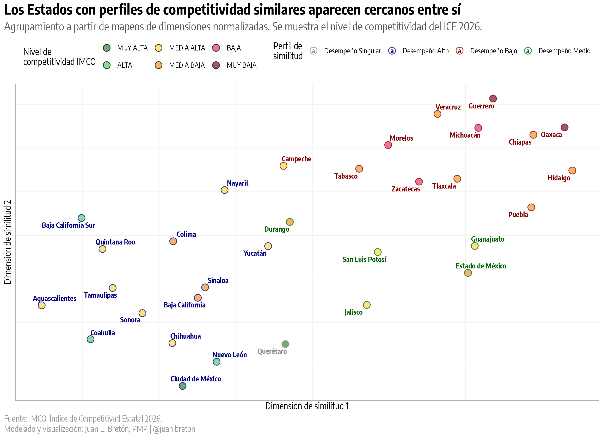
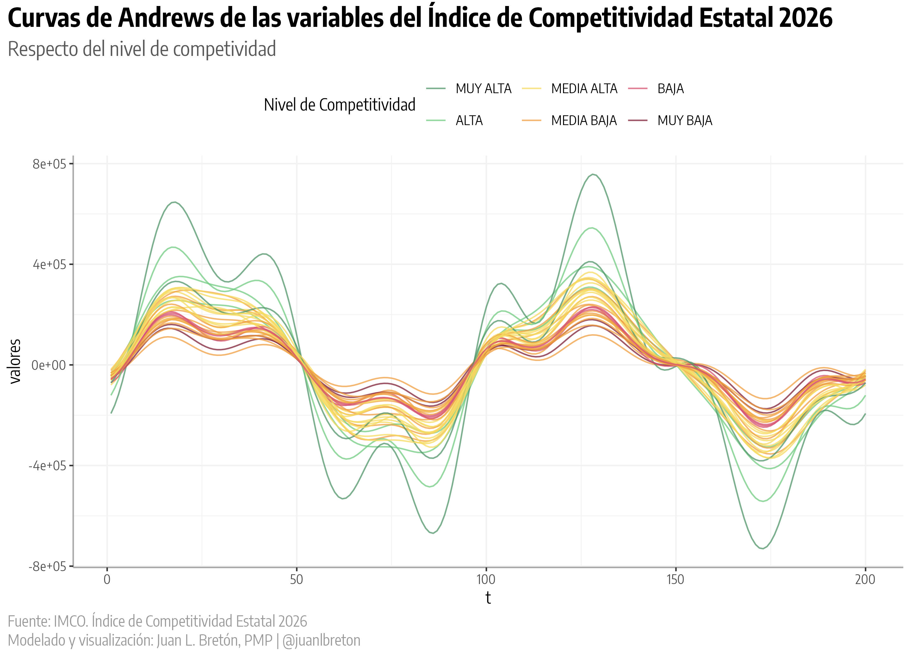

Índice
¿Qué condiciones acompañan más de cerca el puntaje publicado?
Cuatro lecturas del ICE 2026 muestran un núcleo común, perfiles distintos y límites claros para interpretar los resultados
IMCO · ÍNDICE DE COMPETITIVIDAD ESTATAL 2026
El ICE 2026 dibuja un patrón consistente: los estados competitivos tienden a combinar trabajo formal, educación, salud, ingreso, conectividad y una economía más compleja. Ninguna de estas capacidades funciona como explicación única. Los cuatro análisis apuntan a un sistema en el que varias condiciones avanzan juntas, con combinaciones distintas entre los estados.
Este resultado permite formular mejores preguntas de diagnóstico. No demuestra que una variable cause a otra ni permite calcular cuánto aumentaría la competitividad al intervenir un indicador.
Los análisis principales convergen en una lectura: formalidad, salud, educación, ingreso, conectividad y sofisticación productiva suelen presentarse juntas. Las diferencias entre estados se describen mejor al observar la configuración completa que al aislar una variable.
La informalidad se relaciona de manera inversa con el índice y ocupa el centro de la red. Su asociación con salud, ingreso, producción por habitante y complejidad económica la convierte en una señal útil para el diagnóstico. Esa centralidad no prueba que reducirla, por sí sola, produzca mejoras en todas las demás variables.
PIB por habitante, complejidad económica e ingreso laboral aparecen conectados con escolaridad, salud y esperanza de vida. Los datos no permiten separar la contribución de cada dimensión, pero sí justifican diagnosticarlas en conjunto antes de definir una prioridad.
Los perfiles mezclan niveles vecinos y contienen excepciones. El puntaje resume el resultado, pero oculta la composición que lo produce. La pregunta útil para cada entidad es qué combinación de capacidades explica su posición y cuál es su brecha frente a estados realmente comparables.
Los datos comparan 32 estados en una fotografía y varias variables forman parte del propio índice. Además, algunos indicadores comparten definiciones, los perfiles dependen de decisiones del método y la vista panorámica es solo orientativa. Estas limitaciones impiden atribuir causas, estimar impactos o priorizar inversiones con este análisis por sí solo.
Una fortaleza individual puede coexistir con rezagos importantes en capacidades relacionadas. Una ampliación útil sería medir, para cada estado, el equilibrio entre formalidad, capital humano, infraestructura digital y capacidad productiva. Esta perspectiva permitiría distinguir entre entidades con una base consistente y entidades cuyo resultado se concentra en pocas fortalezas.
El mapa de perfiles permite construir referentes más útiles que el líder nacional. Para una entidad de nivel medio, la comparación más accionable puede ser un estado cercano en estructura que muestre una brecha menor en una capacidad específica. Esta selección debe revisarse indicador por indicador; la cercanía del mapa es un punto de partida.
La asociación entre formalidad y acceso a instituciones de salud es tan fuerte que tratarlas como palancas completamente separadas puede exagerar el diagnóstico. Antes de proponer prioridades, conviene revisar qué indicadores comparten población, definición o mecanismo de medición.
El subíndice de Derecho no figura entre las quince asociaciones más altas con el puntaje ni en el núcleo de la red seleccionada. Esto no demuestra que sea irrelevante. Puede reflejar menor variación entre estados, asociaciones más moderadas, mediciones con otra dinámica o un papel que opera como condición de fondo. La ausencia en una selección estadística debe convertirse en una pregunta de investigación, no en una afirmación sustantiva.
Las señales anteriores se apoyan en tres análisis principales y una vista complementaria. Cada lectura responde una pregunta distinta y tiene límites específicos.

Las barras muestran qué tan cerca se mueve cada indicador del índice entre los 32 estados. La dirección indica si ambos tienden a subir juntos o si uno aumenta cuando el otro disminuye.
Abrir la asociación con el índice a tamaño completo
La esperanza de vida, el PIB por habitante, el acceso a instituciones de salud, la complejidad económica, los ingresos propios, la escolaridad y la infraestructura digital aparecen entre las condiciones más cercanas al índice. La informalidad laboral y la población con ingresos por debajo de la línea de bienestar se mueven en sentido contrario.
La coincidencia entre dimensiones económicas, sociales, laborales y digitales sugiere que la competitividad estatal refleja un ecosistema de capacidades. También obliga a ser cuidadosos: el puntaje del ICE se construye con estos mismos indicadores. La gráfica describe qué variables acompañan al resultado; no descubre pesos oficiales ni efectos independientes.
Qué capacidades distinguen con mayor claridad a los estados con puntajes diferentes.
Qué política generaría el mayor avance ni cuánto cambiaría el índice al intervenir una variable.

La figura conserva 51 relaciones especialmente fuertes entre 15 indicadores. El tamaño identifica las variables más conectadas dentro de este núcleo; verde muestra movimiento en la misma dirección y rojo en sentido inverso.
Abrir la red a tamaño completo
La informalidad laboral y la esperanza de vida ocupan las posiciones más conectadas de la red. Cerca de ellas aparecen el acceso a instituciones de salud, la escolaridad, el ingreso de trabajadores de tiempo completo, el PIB por habitante y la complejidad económica en sectores de innovación.
El núcleo reúne tres capacidades que conviene leer en conjunto:
La relación casi exacta entre informalidad y acceso a salud merece una precaución adicional: ambas mediciones están ligadas al empleo formal. Parte de su cercanía puede provenir de cómo se definen, no de dos mecanismos independientes.
La red utiliza un filtro exigente para conservar solo el núcleo más claro. Que un indicador quede fuera no implica que carezca de importancia. La centralidad significa conexión estadística dentro de esta red; no equivale a influencia causal.
Qué indicadores forman el núcleo más conectado y qué capacidades aparecen enlazadas entre subíndices.
Qué variable origina el patrón, cuál debería intervenirse primero o si una ausencia en la red significa irrelevancia.

La cercanía representa similitud aproximada en el conjunto de indicadores. El color interior conserva el nivel publicado por el IMCO; el contorno identifica el perfil encontrado por el análisis.
Abrir el mapa de perfiles a tamaño completo
El mapa organiza a los estados en tres perfiles amplios y separa a Querétaro como un caso singular. La composición de los grupos es informativa:
La señal central es que posición y perfil no son equivalentes. Dos estados con nivel similar pueden llegar a él mediante configuraciones distintas, y estados ubicados en niveles vecinos pueden compartir buena parte de su estructura. Para diseñar una estrategia estatal, conviene comparar entidades con perfiles semejantes antes de copiar las políticas de quienes ocupan los primeros lugares.
Los perfiles dependen de la forma en que el mapa resume los datos y de los parámetros usados para agruparlos. Son una guía para seleccionar comparables, no una clasificación definitiva.
Qué estados presentan configuraciones semejantes y por qué posición y perfil aportan información distinta.
Que los grupos sean una tipología definitiva, estable ante cualquier método o equivalente a una nueva clasificación de competitividad.

Cada línea resume el perfil de un estado y el color corresponde a su nivel de competitividad. La superposición sugiere continuidad entre niveles, pero la figura se considera solo orientativa.
Abrir las curvas a tamaño completo
Las curvas sugieren una gradación general y zonas de superposición entre niveles. Se presentan únicamente como una vista orientativa del conjunto.
Un panorama general de la continuidad y la superposición entre los niveles de competitividad.
Que existan fronteras precisas entre niveles ni que esta vista confirme por sí sola las demás señales.
Las señales describen qué capacidades aparecen juntas y qué perfiles estatales comparten rasgos. Ese conocimiento todavía no basta para elegir una intervención. Una decisión defendible necesita convertir el patrón general en un problema concreto, comparar la entidad con referentes pertinentes y comprobar que existe un mecanismo plausible entre la acción propuesta y el resultado esperado.
Los tres pasos siguientes reducen el riesgo de priorizar una variable solo porque aparece muy conectada o asociada con el índice. También obligan a incorporar información que esta fotografía no contiene, como la evolución reciente, los costos, los tiempos y la capacidad institucional para ejecutar una estrategia.
Identificar qué capacidades están rezagadas y cuáles ya pueden funcionar como soporte.
Contrastar estados de perfil semejante, además de revisar su posición en el índice.
Revisar evolución temporal, definiciones, costos y capacidad de implementación antes de priorizar.
¿Qué condiciones acompañan más de cerca el puntaje publicado?
¿Qué indicadores forman el núcleo más conectado del sistema?
¿Qué estados se parecen cuando se consideran todas sus condiciones?
¿Los niveles aparecen como bloques separados o como un continuo?
Un índice resume muchas condiciones en un solo resultado y, al hacerlo, puede ocultar configuraciones distintas entre los estados. Por eso es relevante observar el mismo problema desde varias perspectivas: la asociación con el puntaje muestra qué condiciones acompañan al resultado; la red identifica qué variables se mueven juntas; los perfiles revelan semejanzas entre entidades; y el panorama permite observar si los niveles forman bloques o se superponen.
Cuando varias miradas coinciden, la señal gana consistencia. Cuando difieren, indican qué parte del patrón necesita mayor investigación. Esta combinación reduce el riesgo de convertir una relación fuerte, una agrupación o una sola gráfica en una explicación total de la competitividad.